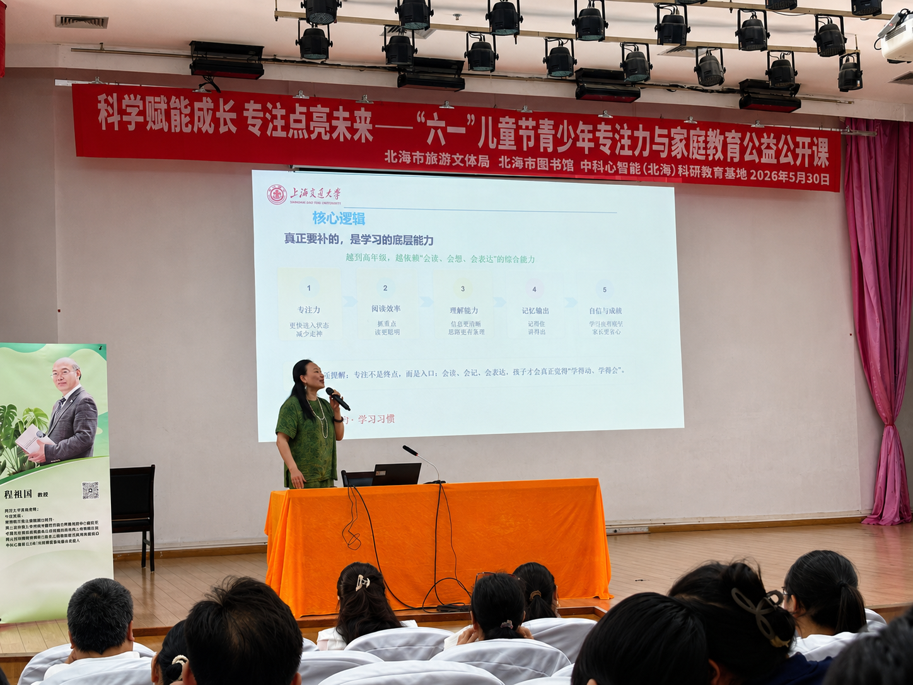
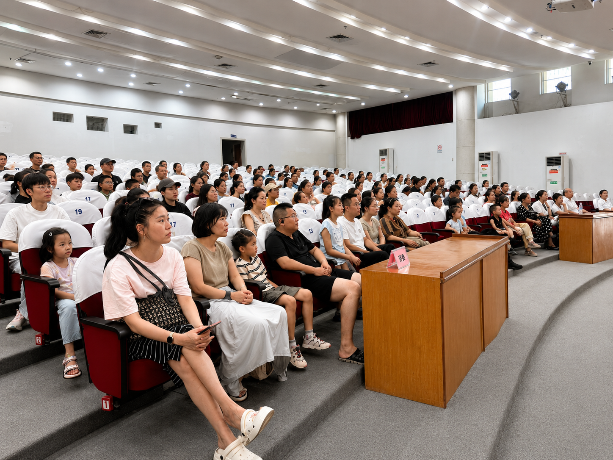
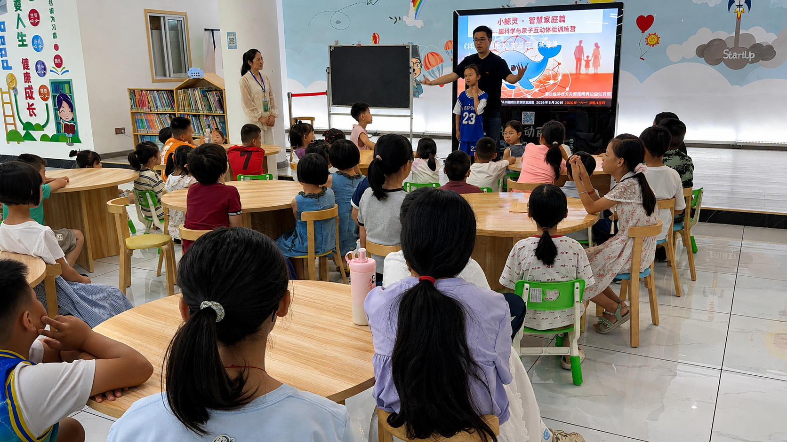

科学赋能成长 专注点亮未来
在“六一”国际儿童节来临之际，“科学赋能成长 专注点亮未来——北海市图书馆六一儿童节青少年专注力与家庭教育公益公开课”5月30日在北海市图书馆举行。活动面向青少年及家长，围绕专注力培养、阅读能力提升、学习习惯养成和家庭教育指导等内容，开展公益讲座和互动体验，引导家长以科学、平和的方式陪伴孩子成长。
据北海市图书馆发布的活动信息，此次公益公开课由北海市图书馆主办、中科明心教育研发团队承办。现场，主讲教师郭平结合青少年学习和家庭陪伴中的常见情境，从“孩子坐不住、开始慢、读题费劲、容易忘、复述不清”等问题切入，和家长交流专注、阅读、理解、记忆与表达能力之间的关系。

讲座中，郭平认为，提升学习能力不能只依靠延长学习时间或增加练习量，更应关注孩子的学习状态、方法习惯和家庭支持。她建议，家长在日常陪伴中减少单纯催促，多给孩子稳定的学习节奏和正向反馈，通过相对固定的阅读或练习时间、短时专注任务、复述交流等方式，帮助孩子逐步形成更有效的学习习惯。
围绕家长普遍关注的孩子学习状态问题，讲座内容主要从专注、阅读、记忆和表达等方面展开。主讲教师结合课件和现场交流，介绍了促进孩子进入学习状态、提升阅读理解效率、巩固知识记忆、增强表达能力的具体方法，引导家长从成长规律出发，关注学习能力背后的习惯培养和心理支持。

家庭配合也是本次活动关注的重要内容。讲座建议，家长可从生活中容易坚持的小环节入手，如每天安排相对稳定的阅读或练习时间、一次练习保持在适当时长、孩子学习时尽量减少打断、鼓励孩子把刚学到的内容讲出来等；在评价孩子时，先肯定进步，再提出调整建议，让亲子沟通更加积极。
除报告厅讲座外，活动还在儿童阅读空间设置互动体验环节。孩子们在老师引导下参与观察、倾听、表达等活动，在轻松氛围中体验专注和互动学习。多名家长表示，活动内容贴近日常家庭教育场景，提供了可参考、可实践的方法。

作为公共文化服务空间，图书馆不仅是阅读推广的重要阵地，也是家庭教育、青少年成长服务和社会公益资源汇聚的平台。此次公益公开课将阅读推广、心理健康教育和家庭教育指导相结合，帮助家长更直观地理解孩子学习状态背后的能力因素，营造关心关爱青少年健康成长的良好氛围。
活动有关负责人表示，下一步将继续依托图书馆公共文化阵地，围绕青少年阅读成长、心理健康、家庭教育等主题开展公益活动，推动优质教育资源更好服务青少年和家庭。